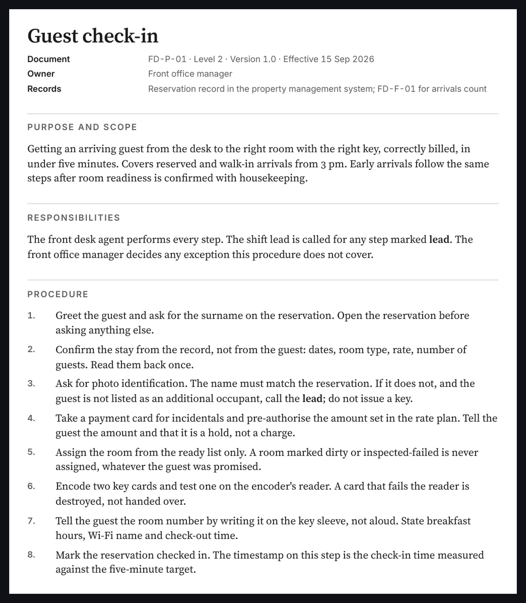
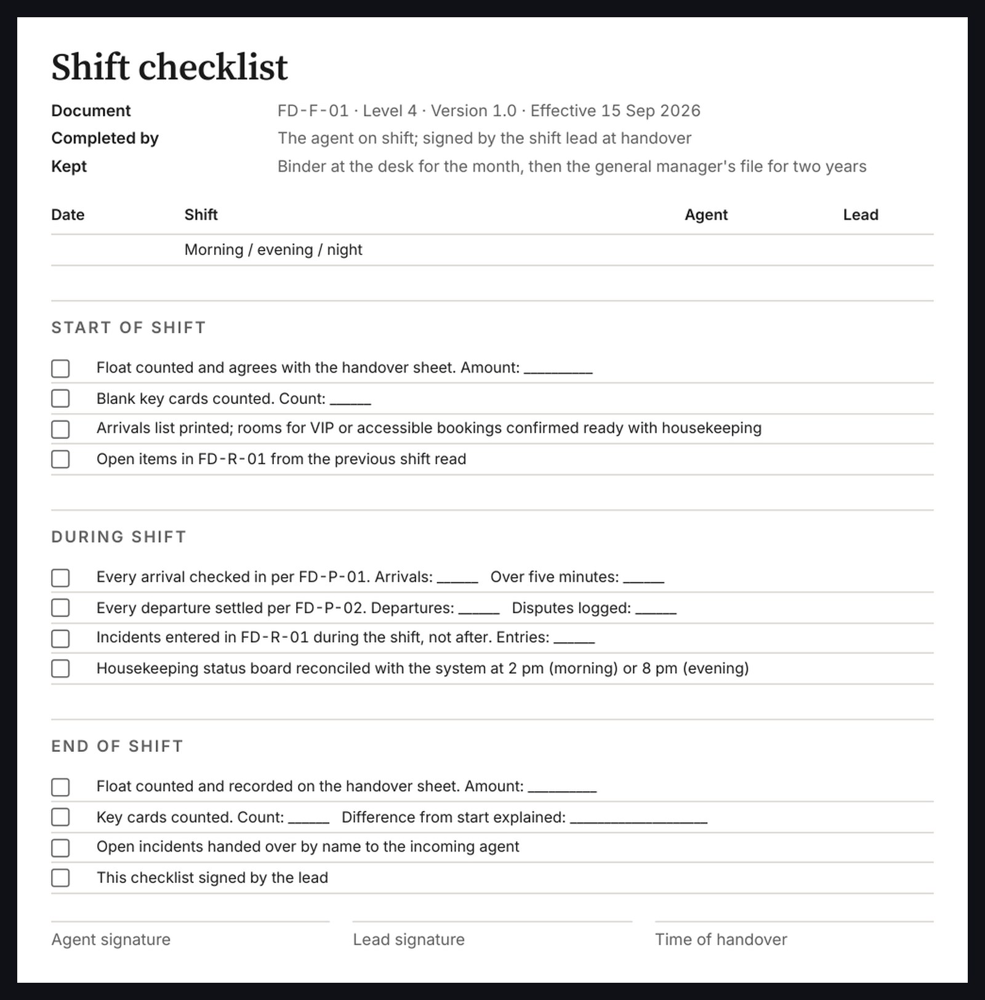
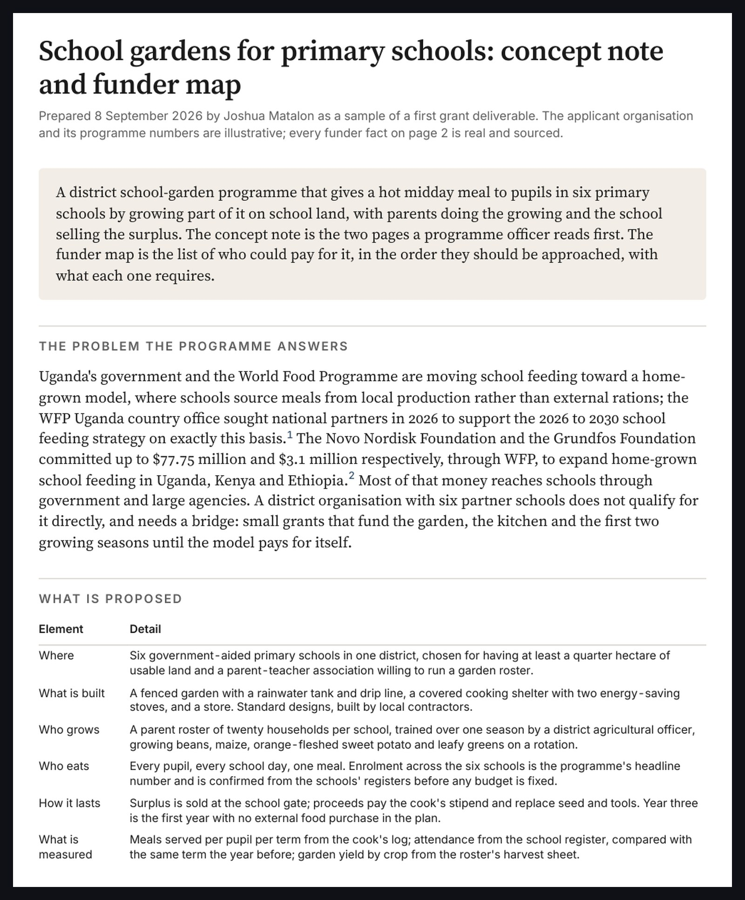
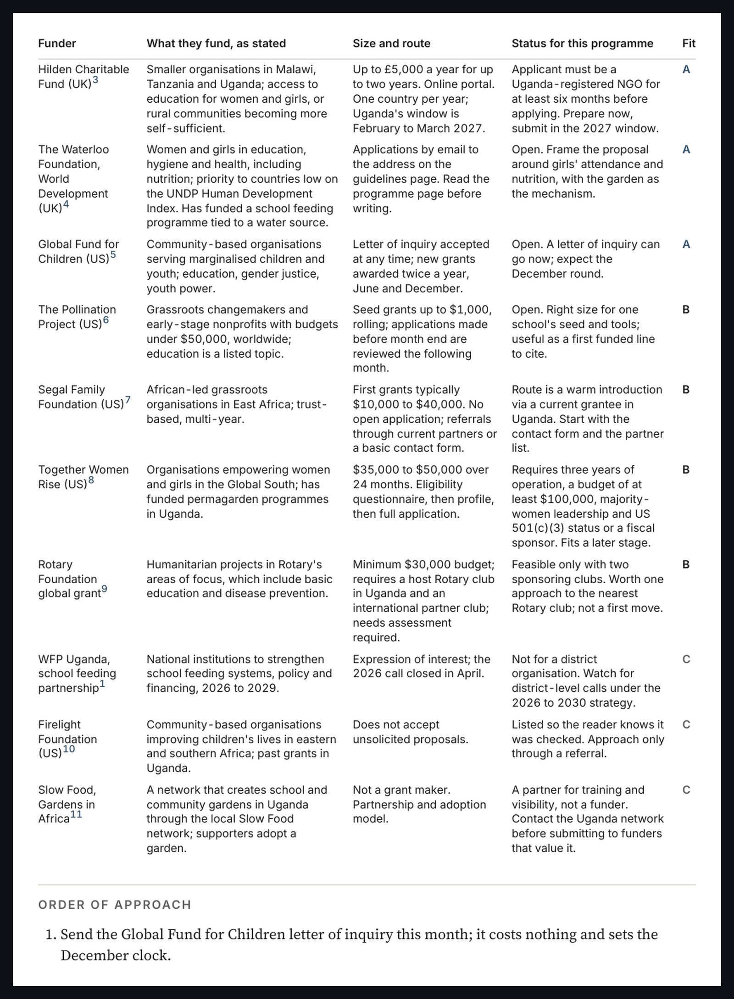

Documents · process documentation, grant writing · two sample deliverables
Documents that survive a hostile read.
Two kinds of document buyers post most: an operating documentation set, and a grant package. The first is a front desk documentation set for a small hotel: one policy, three procedures, one work instruction, a form and a register, each with an owner, a version and a review date, written for the operation rather than filled into a template. The second is the first deliverable of a grant engagement: a two-page concept note and a funder map of ten real funders, each checked against the programme and cited. The organisations are illustrative. The funder facts are real.
The documentation set



The grant package


How they are written
- Procedures name who decides every exception. Forms carry the counts that the policy's measures need, so the measures can be computed from the records, not estimated.
- The funder map was researched on the day it is dated: each funder's own guidelines page, grant size, route and eligibility, with the page cited. Closed calls and invitation-only funders are listed as such rather than dropped.
- The budget in the concept note is unrounded and labelled illustrative, so a reader sees how the lines build and knows a real submission replaces each with a quote.
- Both are typeset to the same written standard as the research brief: one serif for text, one sans-serif for tables, three sizes, hairlines instead of boxes.
Download the documentation set and the concept note and funder map.